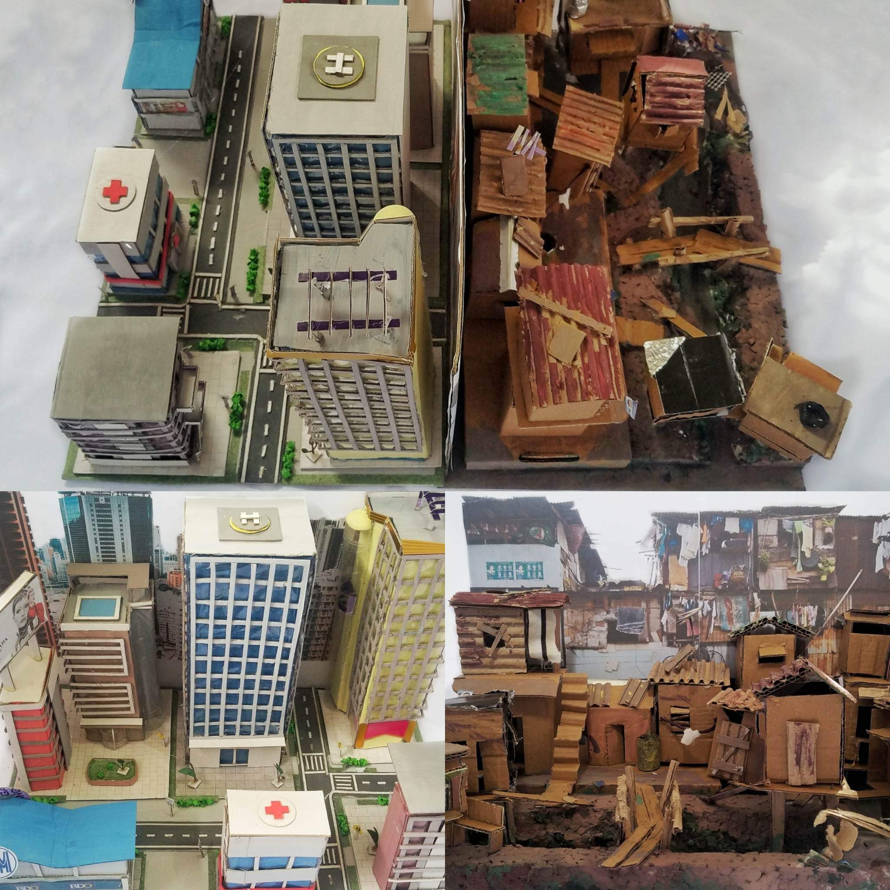
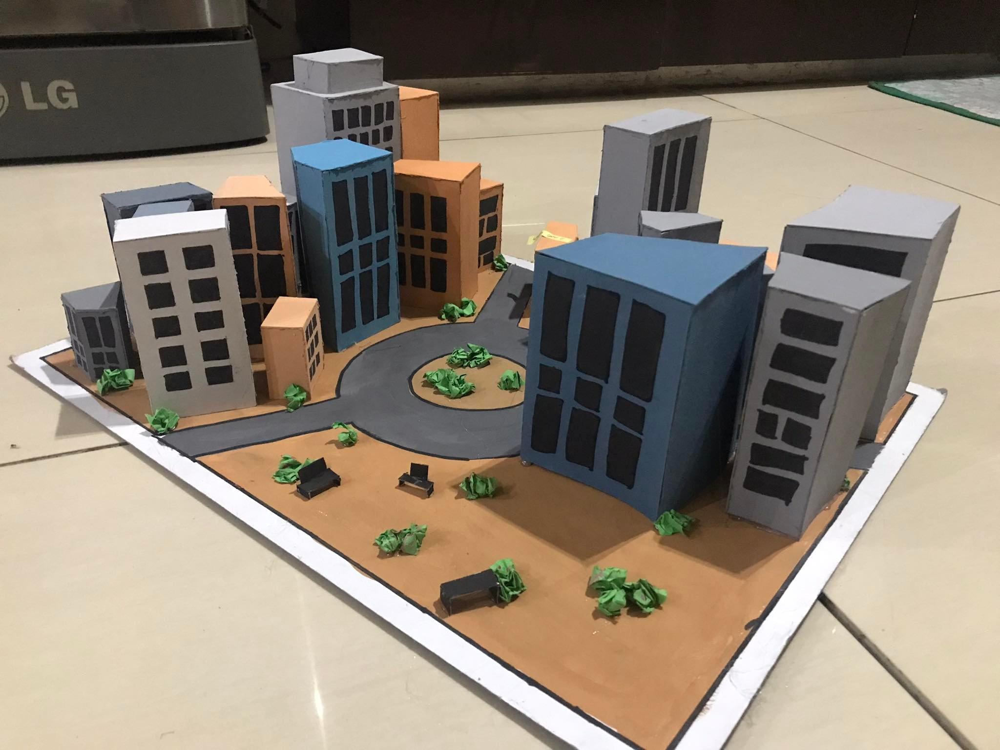

THE MODERN REALITY
With a touch of social realism, the artists chose to contrast two worlds by creating a cityscape that depicts an enriching city with buildings, busy people, and money flowing, as well as a world with overcrowded homes, limited or no access to basic necessities, and people striving to do better in the slums. This model addresses the societal reality that not everyone has an equal opportunity to experience a lavish lifestyle everyone day.

DAGKO NGA MGA BILDING
This artwork was inspired from the Memorial Circle of Quezon City and through the glimpse of my imagination.